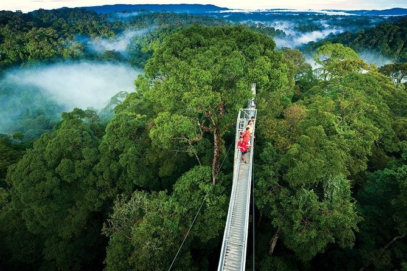

Paraíso de los Deportes de Aventura
Tilarán ofrece un escenario natural incomparable para los amantes de la adrenalina y los deportes extremos. Desde las alturas de los bosques nubosos hasta las aguas del Lago Arenal, nuestra región te brinda experiencias que acelerarán tu pulso y crearán recuerdos imborrables. Contamos con operadores certificados y equipo de primera calidad para garantizar tu seguridad mientras vives aventuras límite.
La diversidad geográfica de Tilarán - con montañas, lagos, ríos y bosques - crea el playground perfecto para actividades que van desde el canopy entre árboles centenarios hasta el rappel en cascadas ocultas.
Canopy y Tirolinas
Vuela sobre doseles forestales
Rappel en Cascadas
Descenso vertical en caídas de agua
Ciclismo de Montaña
Senderos técnicos y paisajísticos
Senderismo Extremo
Rutas desafiantes con recompensas panorámicas
Experiencias de Aventura
Canopy Extremo
Vuela sobre los bosques nubosos de Tilarán en uno de los circuitos de canopy más emocionantes de Costa Rica:
- 12 cables que suman más de 3km de recorrido
- Superman cable: Vuelo en posición horizontal de 1km de longitud
- Rappel libre: Descenso controlado de 45 metros
- Tarzan swing: Columpio gigante sobre el vacío
- Puentes colgantes: Atravesando quebradas y cascadas
Rappel en Cascadas
Desciende cascadas cristalinas en medio de la jungla con nuestros guías especializados:
- Cascada La Leona: 35 metros de descenso vertical
- Cascada Escondida: Rappel tras la cortina de agua
- Salto opcional: A piscinas naturales desde 8 metros
- Niveles: Desde principiante hasta experto
- Equipo: Arnés, cascos, cuerdas y traje de neopreno incluidos
Ciclismo de Montaña
Explora senderos técnicos con vistas al Lago Arenal y Volcán:
- Sendero Volcánico: 22km con ascenso técnico y descenso rápido
- Ruta del Lago: 35km circunnavegando el lago (parcialmente)
- Downhill extremo: 8km de descenso con 800m de desnivel
- Alquiler: Bicicletas especializadas de montaña
- Guías: Expertos en rutas locales y técnicas
Información para Aventureros
Requisitos físicos: Buen estado de salud, no recomendado para embarazadas o personas con problemas cardíacos
Edad mínima: 12 años (varía por actividad)
Equipo incluido: Todo el equipo de seguridad especializado
Guías: Certificados en primeros auxilios y rescate
Seguro: Póliza de responsabilidad civil incluida
Qué llevar: Ropa cómoda, zapatos deportivos cerrados, traje de baño, cambio de ropa
Mejor Época para Aventuras
Temporada Seca
(Diciembre - Abril)
Condiciones: Cielos despejados, mejores vistas
Actividades ideales: Ciclismo, senderismo, canopy
Recomendaciones: Protector solar, mucha agua
Temporada Verde
(Mayo - Noviembre)
Condiciones: Cascadas con mayor caudal, vegetación exuberante
Actividades ideales: Rappel, caminatas en bosque nuboso
Recomendaciones: Impermeable, calzado antideslizante
Paquetes de Aventura
Aventura de un Día
Experiencia completa para quienes tienen tiempo limitado:
- Canopy extremo (12 cables)
- Rappel en cascada de 35 metros
- Almuerzo típico incluido
- Transporte desde su alojamiento
- Fotografías profesionales incluidas
- Precio: $95 por persona
Weekend Extremo
Dos días de adrenalina pura para los más aventureros:
- Día 1: Ciclismo de montaña + rappel
- Día 2: Canopy + senderismo extremo
- 2 almuerzos, 1 cena incluidos
- Alojamiento en eco-lodge aventurero
- Video profesional de las actividades
- Precio: $220 por persona
Experiencia Personalizada
Diseña tu propia aventura según tus intereses y nivel:
- Selección de actividades a la medida
- Guía privado especializado
- Equipo de última generación
- Transporte exclusivo
- Precio: Desde $150 por día